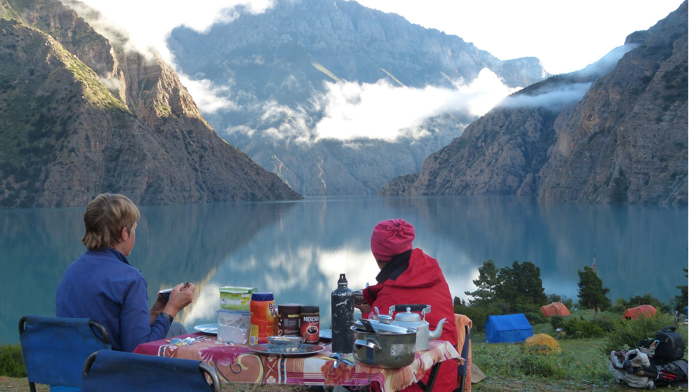
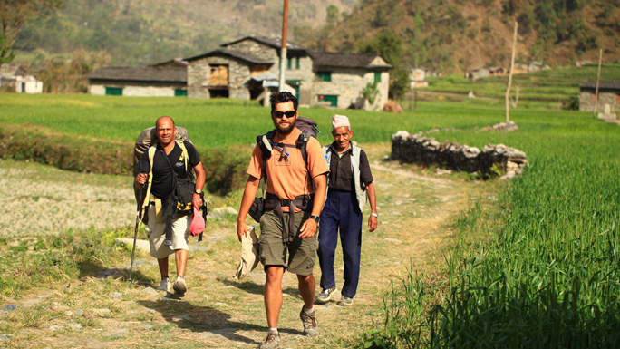
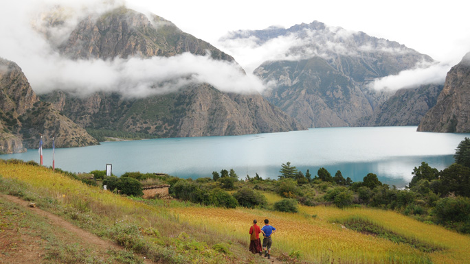
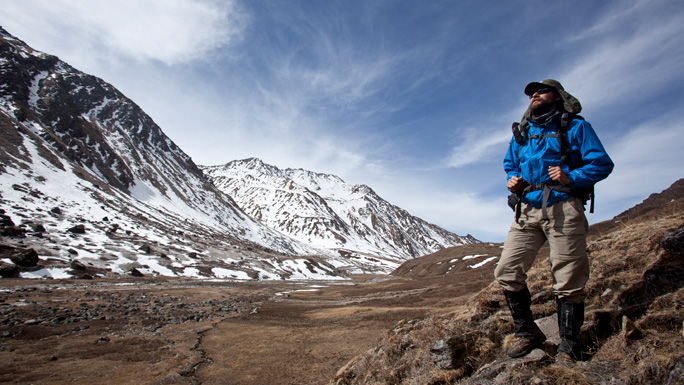
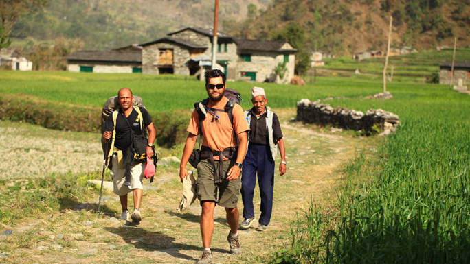
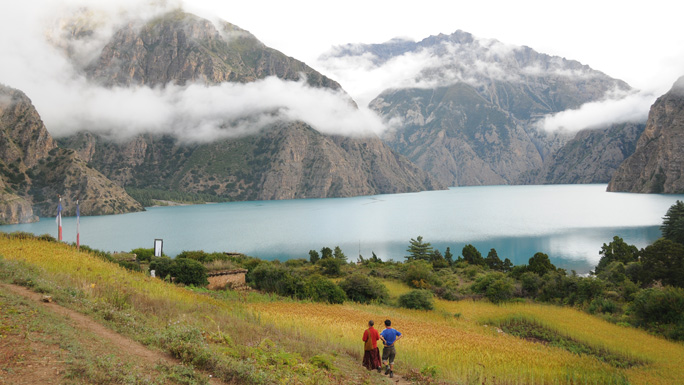
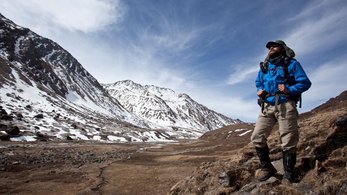

icy waters of Phoksundo Lake.
DOLPA
Trek through hidden valleys, visit ancient Shey Gompa, touchicy waters of Phoksundo Lake.
Trek through the hidden valleys of Dolpa, visit the ancient Shey Gompa (The Crystal Monastery), touch the icy waters of Phoksundo Lake, see yak caravans cross high-Himalayan passes, visit some of the highest settlments on earth like the Dho-Tarap valley; Dolpa will never cease to amaze you.
Dolpa or Dolpo was popularized by the film “Caravan” which showcases the extraordinary untouched beauty of the region. It is remote and fascinating, confined by the Dhaulagiri range in the south and east, the mountains Sisne and Kanjiroba in the west and Tibet towards the north. Lake Phoksundo with its turquoise waters is the major attraction in Dolpa.
 The people of Dolpa generally settle at altitudes of 3,660 m to 4,070 m and these are probably one of the highest settlements in the world. There are 130 gompas in Dolpa which speaks volumes for the religious nature of its inhabitants. The trek is enlivened by the sight of yak caravans that even today travel long distances through difficult terrain to barter goods.
Closely linked with Tibet, the people speak Tibetan, have strong Mongoloid features, maintain their Tibetan culture with monasteries that follow closely the Buddhism of Tibet.
 The proximity with Tibet has ensured that little has changed since their forefathers crossed the border into Nepal. This trek is an opportunity to meet people who follow a lifestyle that goes back centuries.
These unexplored, high altitude valleys were not opened until 1989. Isolated by the difficult topography, the people in this region have preserved their lifestyle, remaining almost untouched by the trappings of modern society.
 Dolpa falls among Restricted Areas. Therefore, trekkers require Trekking Permit from the Department of Immigration in addition to the TIMS card to trek to this region. Trekkers should be physically fit as there are long and strenuous stretches en route.
Dolpa or Dolpo was popularized by the film “Caravan” which showcases the extraordinary untouched beauty of the region. It is remote and fascinating, confined by the Dhaulagiri range in the south and east, the mountains Sisne and Kanjiroba in the west and Tibet towards the north. Lake Phoksundo with its turquoise waters is the major attraction in Dolpa.
 The people of Dolpa generally settle at altitudes of 3,660 m to 4,070 m and these are probably one of the highest settlements in the world. There are 130 gompas in Dolpa which speaks volumes for the religious nature of its inhabitants. The trek is enlivened by the sight of yak caravans that even today travel long distances through difficult terrain to barter goods.
Closely linked with Tibet, the people speak Tibetan, have strong Mongoloid features, maintain their Tibetan culture with monasteries that follow closely the Buddhism of Tibet.
 The proximity with Tibet has ensured that little has changed since their forefathers crossed the border into Nepal. This trek is an opportunity to meet people who follow a lifestyle that goes back centuries.
These unexplored, high altitude valleys were not opened until 1989. Isolated by the difficult topography, the people in this region have preserved their lifestyle, remaining almost untouched by the trappings of modern society.
 Dolpa falls among Restricted Areas. Therefore, trekkers require Trekking Permit from the Department of Immigration in addition to the TIMS card to trek to this region. Trekkers should be physically fit as there are long and strenuous stretches en route.